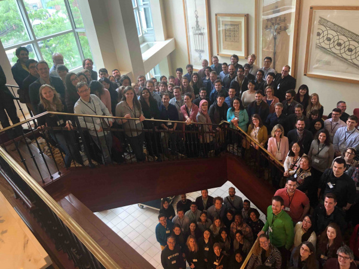

CEMS 2022

The 18th Annual Context and Episodic Memory Symposium (CEMS 2022) will be held at The Logan Hotel, in Philadelphia, PA, on May 12th and 13th, 2022.
Conference Registration
Registration for the CEMS2022 conference is now CLOSED.
Location & Hotel
Venue
The venue for CEMS 2022 will be The Logan, located in downtown Philadelphia, Pennsylvania.
The Logan hotel is located at 1 Logan Square, Philadelphia, PA 19103.
More information on The Logan can be found on their website. Click here to view this location on Google Maps.
Abstract Submission
Abstract submission for CEMS 2022 is now CLOSED.
Please note that poster dimensions should be no larger than 40x60 inches. Poster boards, easels, and push pins will be provided.
Schedule
If you are presenting and have scheduling conflicts, please let us know as soon as possible by emailing context.symposium@gmail.com
| Thursday | Friday | ||
|---|---|---|---|
| 8:30 | Breakfast & Registration | 8:00 | Breakfast & Late Registration |
| 9:00 | Opening Remarks | 8:30 | Nicole M. Long (Discussant: Halle Dimsdale-Zucker) |
| 9:05 | Adam Osth (Discussant: Alice F. Healy) | 9:05 | Roger Ratcliff (Discussant: Ashwin Ramayya) |
| 9:40 | Gordon Logan (Discussant: Geoff Ward) | 9:40 | Rich Shiffrin (Discussant: Rosie Cowell) |
| 10:15 | Break | 10:15 | Break |
| 10:40 | Tyler Tomita | 10:45 | Gregory Cox |
| 10:55 | Ehren Newman | 11:00 | Ada Aka |
| 11:10 | Lukas Kunz | 11:15 | Neal Morton |
| 11:25 | John Sakon | 11:30 | James Antony |
| 11:40 | Group Photo & Lunch | 11:45 | Michael J. Kahana |
| 1:00 | Keynote Address: Morris Moscovitch | 12:00 | Lunch/Poster Setup |
| 2:00 | Break | 1:15 | Poster Session II |
| 2:10 | Julia Steinberg (Discussant: Gregory Cox) | 3:00 | Coffee Break |
| 2:45 | Qiong Zhang (Discussant: Marc Howard) | 3:20 | Data Blitz, including: |
| 3:20 | Coffee Break | 1. Abigail Mundorf | |
| 3:40 | Data Blitz, including: | 2. Laura Saad | |
| 1. Maureen Ritchey | 3. Janice Chen | ||
| 2. Yoonjung Lee | 4. Hongmi Lee | ||
| 3. Jiawen Huang | 5. Wangjing Yu | ||
| 4. Tamara Gedankien | 6. Christopher Bates | ||
| 5. Linda Yu | 7. Linh T T Lazarus | ||
| 6. Dhairyya Singh | 8. Camille Gasser | ||
| 7. Xinming Xu | 9. Daniel Schonhaut | ||
| 8. Isaac Kinley | 4:20 | Conclusion | |
| 9. Youssef Ezzyat | |||
| 4:40 | Break/Poster Setup | ||
| 5:00 | Poster Session I until 7pm | ||
List of featured spoken presentations
First author will be presenting unless otherwise noted. Presenting author's affiliation is noted for each presentation below.
Keynote Presentation
- Dr. Morris Moscovitch (Professor Emeritus, Department of Psychology, University of Toronto): Memory consolidation and re-organization: Details, gist and schemas
Spoken Presentations
- Gordon D. Logan & Gregory E. Cox (Vanderbilt University): Context Retrieval and Updating theory of serial recall
- Adam F. Osth and Mark Hurlstone (The University of Melbourne): Do item-dependent context representations underlie serial order in cognition?
- Julia Steinberg and Haim Sompolinsky (Princeton University): Associative memory of structured knowledge
- Qiong Zhang, Thomas L. Griffiths, and Kenneth A. Norman (Rutgers University, New Brunswick): Optimal policies for free recall
- Nicole M. Long (University of Virginia): To encode or retrieve, that is the question: How memory states tradeoff and what it means for you
- Roger Ratcliff, Douglas Scharre, and Gail McKoon (The Ohio State University): Discriminating Memory Disordered Patients from Controls Using an Item Recognition Task and Diffusion Modeling
- Ashleigh Maxcey, Rebecca Cutler, Robert Nosofsky, and Richard Shiffrin (Presenting Author) (Indiana University): Is forgetting caused by inhibition?
Short Spoken Presentations
- Tyler M. Tomita, Morgan D. Barense, and Christopher J. Honey (Johns Hopkins University): The Similarity Structure of Real World Memories
- Ehren Newman, Dylan Layfield, Kevin Blankenberger, and Nathan Sidell (Indiana University): Active sampling of spatial context supports spatial memory
- Lukas Kunz, Bernhard P. Staresina, Peter C. Reinacher, Armin Brandt, Andreas Schulze-Bonhage, and Joshua Jacobs (Columbia University): Ripple-locked coactivity of object and place cells supports human associative memory
- John J. Sakon, David J. Halpern, Daniel R. Schonhaut, and Michael J. Kahana (University of Pennsylvania): Hippocampal ripples signal encoding of episodic memories
- Gregory E. Cox (University at Albany, State University of New York): Capacity limitations and decision rules explain differences between item and associative recognition
- Nathan J. Evans and Mathieu Servant (University of Queensland): A model-based approach to disentangling facilitation and interference effects in conflict tasks
- Ada Aka, Lionel S. Schatz, and Sudeep Bhatia (University of Pennsylvania): A Joint Model of Memory and Decision Making Processes
- Neal W. Morton, Rebecca Cutler, and Sean M. Polyn (The University of Texas at Austin): Semantic and temporal structure in a neurocognitive model of episodic memory search
- James Antony, Xiaonan Liu, Yicong Zheng, Charan Ranganath, and Randall O'Reilly (University of California, Davis): Spacing effects arise via error-driven learning in a computational model of the medial temporal lobe
Data Blitz Sessions
Thursday
- Maureen Ritchey (Boston College): Patterns of episodic content and specificity predicting subjective memory vividness
- Yoonjung Lee (Johns Hopkins University): Component brain states in the posterior medial cortex during naturalistic movie viewing
- Jiawen Huang (Columbia University): Developing schema, developing prediction, and their influence on memory
- Wangjing Yu (Columbia University): Emotional prediction errors trigger precise reactivation of related memories
- Linda Yu (Brown University): Grid representations for efficient generalization
- Dhairyya Singh (University of Pennsylvania): A model of autonomous interactions between hippocampus and neocortex driving sleep-dependent memory consolidation
- Xinming Xu (Dartmouth College): The psychological arrow of time drives temporal asymmetries in retrodicting versus predicting narrative events
- Isaac Kinley (McMaster University): Vividness and uncertainty in a neural network model of episodic future thinking
- Tamara Gedankien (Columbia University): Cholinergic modulation of hippocampal oscillations in humans
- Youssef Ezzyat (Wesleyan University): Closed-loop brain stimulation to modulate episodic memory in humans
Friday
- Abigail Mundorf (Michigan State University): Does the temporal contiguity effect require intentional retrieval?
- Laura Saad (Rutgers University -- New Brunswick): Bayesian Memory Model Simulates Temporal Binding Data
- Xian Li (Johns Hopkins University): The Role of Agency in Memory for Narratives: A Choose-Your-Own-Adventure Paradigm
- Hongmi Lee (Johns Hopkins University): A generalized cortical activity pattern at internally-generated mental context boundaries during unguided narrative recall
- Christopher Bates (Harvard University): Coding Strategies in Memory for 3D Objects: The Influence of Task Uncertainty
- Linh T. T. Lazarus (Michigan State University): Integrating verbal theories with computational models: an item-order account of orthographic distinctiveness
- Daniel Schonhaut (University of Pennsylvania): Time cells in the human brain
- Camille Gasser (Columbia University): Cross-modal facilitation of temporal memory: familiar actions scaffold holistic event memory
Poster Sessions
Bold type indicates presenting author.
Session I, Thursday
- Alice F. Healy, Madison D. Paron, and Michael J. Kahana (University of Pennsylvania): Temporal dynamics of order reconstruction
- Matthew Dougherty, David Halpern, and Michael J. Kahana (University of Pennsylvania): Forward and backward serial recall
- Brandon Katerman, Matthew Dougherty, Daniel Schonhaut, Richard T. Adrogue, Ryan Colyer, and Michael J. Kahana (University of Pennsylvania): Spectral biomarkers of study-phase retrieval
- David Halpern, Woohyeuk Chang, and Michael J. Kahana (University of Pennsylvania): The role of memory search in evaluations
- Mariya Toneva, Vy Vo, Javier Turek, Shailee Jain, Sebastian Michelmann, Mihai Capotă, Alexander Huth, Uri Hasson, and Kenneth A. Norman (Princeton University): Memory for long narratives
- Audrey Phan, Weizhen Xie, Kareem Zaghloul (NIH/NINDS): Reinstatement of Dynamic Neural Connectivity Patterns During Episodic Memory Retrieval
- Elizabeth A. McDevitt, Ghootae Kim, Nicholas B. Turk-Browne, and Kenneth A. Norman (Princeton University): Investigating how memory representations change as a function of competition-dependent learning and sleep
- Natalie Biderman, Samuel J. Gershman, and Daphna Shohamy (Columbia University): The role of memory in counterfactual valuation
- Ian Bright, Swift, Vaz, Inati, Zaghloul, and Marc W. Howard (Boston University): Representational drift in the human anterior temporal lobe
- Adam Broitman and Khena Swallow (Cornell University): Does the attentional boost effect influence context representations and inter-item associations?
- Eric R. Cole, Lou T. Blanpain, Nealen G. Laxpati, John J. Sakon, Michael J. Kahana, and Robert E. Gross (Emory University & Georgia Tech Department of Biomedical Engineering):Characterizing brain-wide intracranial evoked responses to temporal lobe electrical stimulation
- Angelique I. Delarazan, Sarah J. Morse, Elena Bosak, Veronica F. Lee, Brendan I. Cohn-Sheehy, Jeffrey M. Zacks, and Zachariah M. Reagh (Washington University in St. Louis): Narrative Coherence Boosts Recall of Naturalistic Events Irrespective of Temporal Gaps
- Kevin P. Darby and Per B. Sederberg (University of Virginia): Item-location associative recognition and temporal context
- Cody Dong, Dhairyya Singh, Marlie Tandoc, and Anna C. Schapiro (University of Pennsylvania): Predictive shifts in object representations with statistical learning
- Adam Fenton, Sarah Benson, and Per B. Sederberg (University of Virginia): A gaze-activated testing effect in recognition memory
- Zohar Raz Groman and Talya Sadeh (Ben-Gurion University of the Negev): What does it feel like to forget over time? An investigation of the effects of delay on objective and subjective measures of memory
- Paxton C. Fitzpatrick, Andrew C. Heusser, and Jeremy R. Manning (Dartmouth College): A geometric approach to modeling knowledge and learning from Khan Academy course videos
- Marc W. Howard (Boston University): Associative mechanisms for temporal relationships in the Laplace domain
- Molly S. Hermiller, Ansh Patel, Josh Jacobs, and Lila Davachi (Columbia University): Subtle change in context affects memory performance
- Brandon G. Jacques, Aakash Sarkar, Zoran Tiganj, Marc W. Howard, and Per B. Sederberg (University of Virginia): Attention over deep scale-invariant temporal history improves natural language processing
- Ata B. Karagoz and Zachariah M. Reagh (Washington University in St. Louis): Representations of perceptual versus semantic relationships among characters in naturalistic events
- S.H.P. Collin, Ross.P. Kempner, S. Srivatsan, A. Beukers, U. Hasson, Kenneth A. Norman (Princeton University): Effect of context-dependent temporal structure on episodic memory
- Manoj Kumar, Ariel Goldstein, Sebastian Michelmann, Jeffrey M. Zacks, Kenneth A. Norman, and Uri Hasson (Princeton University): Event segmentation in story listening using deep language models
- Tiantian Li, Martin Contreras-Carerra, Niloufar Razmi, and Matthew R. Nassar (Brown University): Does arousal optimize behavior by promoting latent state transitions?
- Isabelle L. Moore and Nicole M. Long (University of Virginia): Memory brain state engagement differs across the lifespan
- Devyn E. Smith and Nicole M. Long (University of Virginia): Theta power dissociates hits and correct rejections independent of memory goals
Session II, Friday
- Joseph Rudoler, Nick Diamond, David Halpern, James Bruska, Brandon Katerman, Matthew Dougherty, Woohyeuk Chang, and Michael J. Kahana (University of Pennsylvania): Decoding and optimizing episodic memory
- Ricardo Adrogue, Noa Herz, and Michael J. Kahana (University of Pennsylvania): Clinical validation of laboratory tasks
- Matthew Dougherty, Woohyeuk Chang, Brandon Katerman, David Halpern, Nicholas Diamond, Joseph Rudoler, James Bruska, and Michael J. Kahana (University of Pennsylvania): Searching memory in time and space
- Madison D. Paron, James D. Paron, and Michael J. Kahana (University of Pennsylvania): A context-based model of recall and decisions
- Jonathan Nicholas, Leila Montaser-Kouhsari, Christian Amlang, Chi-Ying Lin, Natasha Desai, Sheng-Han Kuo, and Daphna Shohamy (Columbia University): Value-based decisions are supported by episodic memory but not incremental learning in patients with cerebellar ataxia
- Lynn Lohnas (Syracuse University): Influence of repetition on free recall dynamics
- Jamal Williams, Christopher Baldassano, Elizabeth Margulis, Uri Hasson, Kenneth A. Norman, and Janice Chen (Princeton University): What's the Score: Music-Evoked Reactivation of Naturalistic Events
- Geoff Ward (University of Essex, UK): Toward theoretical integration between free recall and serial recall: Start and End sequences and Error Transposition gradients
- Jeremy J. Thomas and Jeremy B. Caplan (University of Alberta): Modeling constituent-order despite symmetric associations in memory
- Elizabeth M. Siefert, Jianing Mu, Sindhuja Uppuluri, James W. Antony, and Anna C. Schapiro (University of Pennsylvania): Effects of interleaved versus blocked memory reactivation during sleep
- Victoria J. H. Ritvo, Alex Nguyen, Nicholas Turk-Browne, and Kenneth A. Norman (Princeton University): Differentiation and Integration of Competing Memories: A Neural Network Model
- Avinash R. Vaidya, Johanny Castillo, Alejandro Torres and David Badre (Brown University): Influences of recall and familiarity on risky decision-making
- Joseph Sommer, Pernille Hemmer, and Julien Musolino (Rutgers University): Memorability of Counterintuitive Concepts Across Domains
- Matt Siegelman, Niko Kriegeskorte, and Christopher Baldassano (Columbia University): Modeling naturalistic schema learning with computer-generated poetry
- Kelsey Sundby, John Wittig Jr., Alex Vaz, Molly Baumhauer, and Kareem Zaghloul (National Institute of Neurological Disorders and Stroke): Examining the effects of attention on single unit sequences during memory encoding
- Amir Tal, Eitan Schechtman, Bruce Caughran, Ken Paller, and Lila Davachi (Columbia University): The reach of reactivation: The effects of conscious vs. unconscious cueing on associative memory
- Mary Vitello and Jesse Rissman (University of California, Los Angeles): When the wandering mind trips: Attentional fluctuations influence memory for temporal structure
- Tamari Shalamberidze, Jeremy B. Caplan, and Kyle Nash (University of Alberta): Relationship between memory and anxiety
- Jesse K. Pazdera and Michael J. Kahana (McMaster University): Modality Effects in Free Recall: A Retrieved-Context Account
- Aakash Sarkar, Brandon G. Jacques, Zoran Tiganj, Per B. Sederberg, and Marc W. Howard (Boston University): Measuring Temporal Receptive Windows in Neural Networks with a Scale-invariant Temporal History
- Jiali Zhang, John Wittig Jr., Sara Inati, Timothy E.J. Behrens, and Kareem Zaghloul (NINDS/NIH, University of Oxford): Attention and familiarity modulates semantic encoding of neuronal spiking sequences and enhances memory
- Rolando Masís-Obando, Kenneth A. Norman, and Chris Baldassano (Princeton University): Decoding mental walkthroughs of spatial memories in an immersive virtual reality environment
- Anna McCarter, David Huber, and Rosie Cowell (University of Massachusetts at Amherst): No Evidence for a Visual Testing Effect for Novel, Unnameable Objects
- Emily T. Cowan, Yiwen Zhang, Benjamin Rottman, and Vishnu P. Murty (Temple University): The effects of spaced learning and encoding variability on associative memory.
Past Symposia
For information about past CEMS events, please click here.